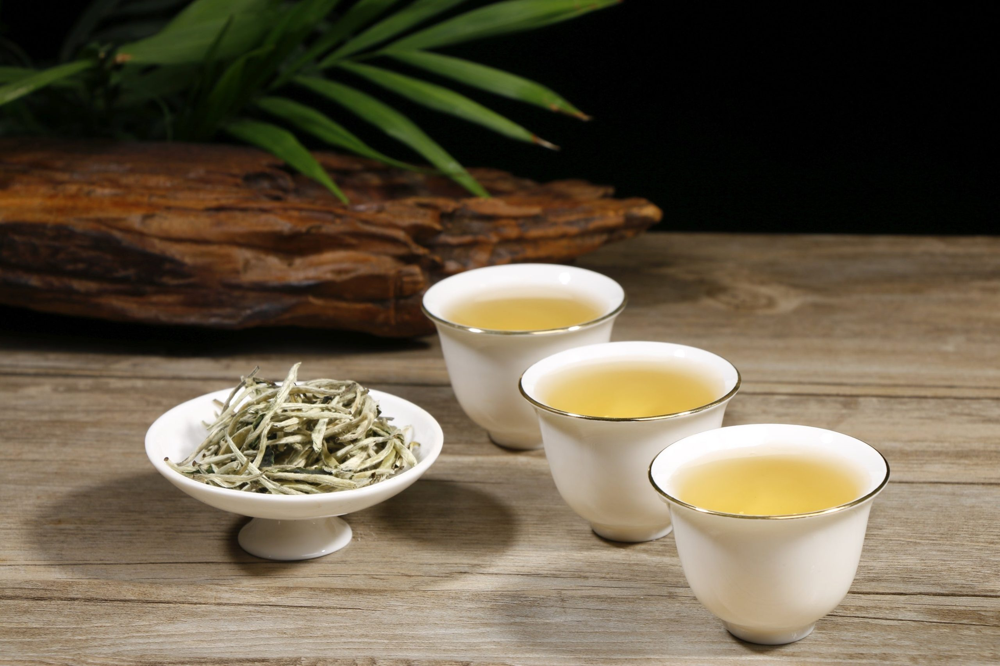
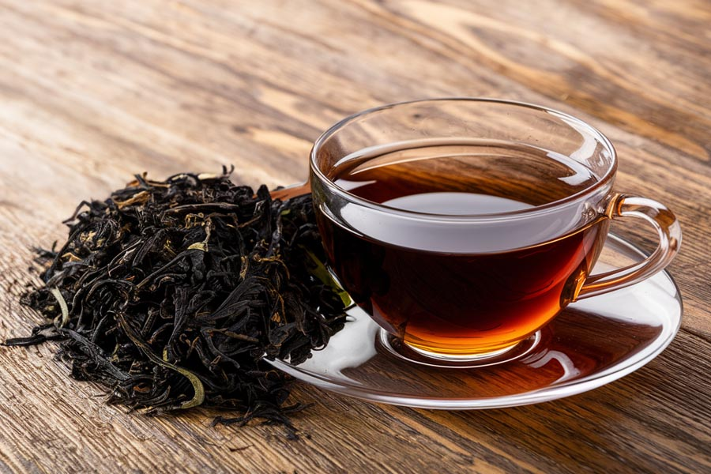
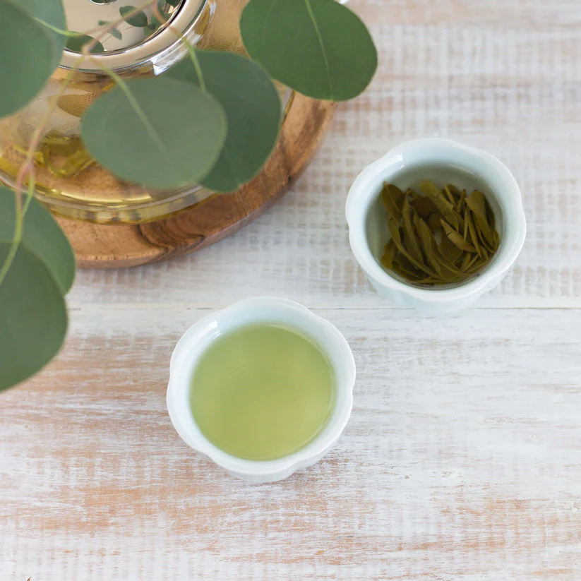
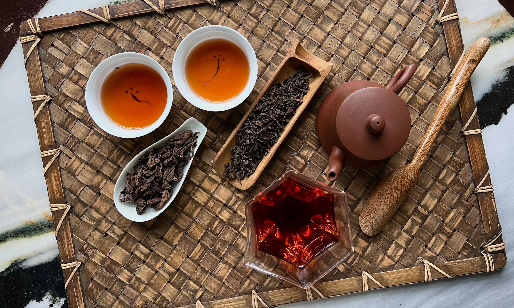
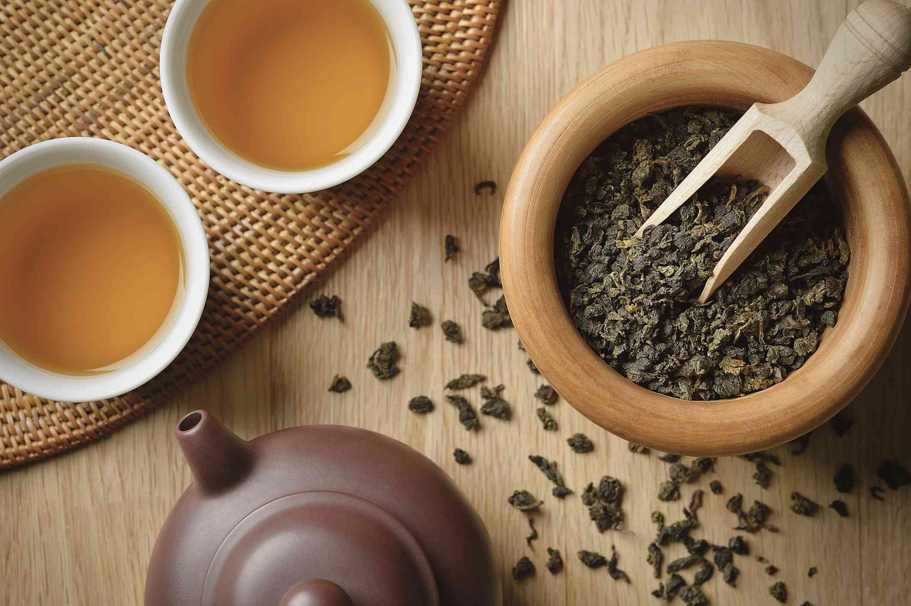

White tea is a delicate, minimally processed tea that is highly sought after by connoisseurs and enjoyed by experts and novices alike. White tea has a light body and a mild flavor with a crisp, clean finish. White tea tends to be very low in caffeine, although some silver tip teas may be slightly higher in caffeine.

Many people new to the world of tea are most familiar with black tea. You can find black tea in name-brand teabags at the grocery store like Lipton or Tetley. Popular breakfast blends like English Breakfast and Irish Breakfast are other examples of black tea. Black teas tend to be relatively high in caffeine, with about half as much caffeine as a cup of tea. They brew up a dark, coppery color, and usually have a stronger, more robust flavor than other types of tea.

Green tea is another type of tea made from the camellia sinensis plant. Green teas often brew up a light green or yellow color, and tend to have a lighter body and milder taste. They contain about half as much caffeine as black tea (about a quarter that of a cup of coffee.) Popular green teas include Gunpowder, Jasmine Yin Cloud, and Moroccan Mint.

Pu-erh tea is an aged, partially fermented tea that is similar to black tea in character. Pu-erh teas brew up an inky brown-black color and have a full body with a rich, earthy, and deeply satisfying taste. Pu-erh teas are fairly high in caffeine, containing about the same amount as black tea (half that of a cup of coffee.)

Oolong is a partially oxidized tea, placing it somewhere in between black and green teas in terms of oxidation. Oolong teas can range from around 10-80% oxidation, and can brew up anywhere from a pale yellow to a rich amber cup of tea. Many oolongs can be re-infused many times, with subtle differences and nuances of flavor in each successive cup.